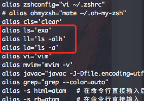
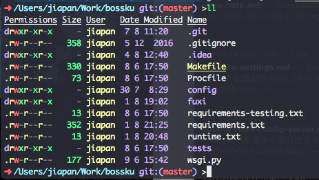
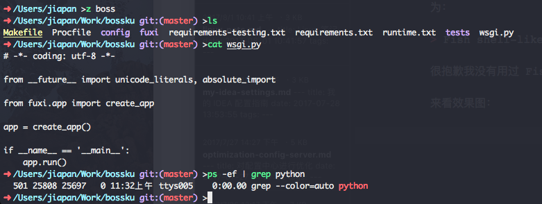
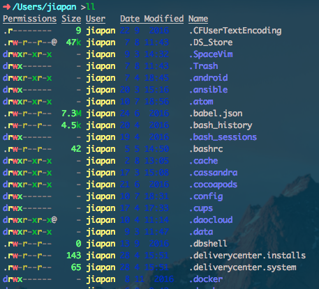
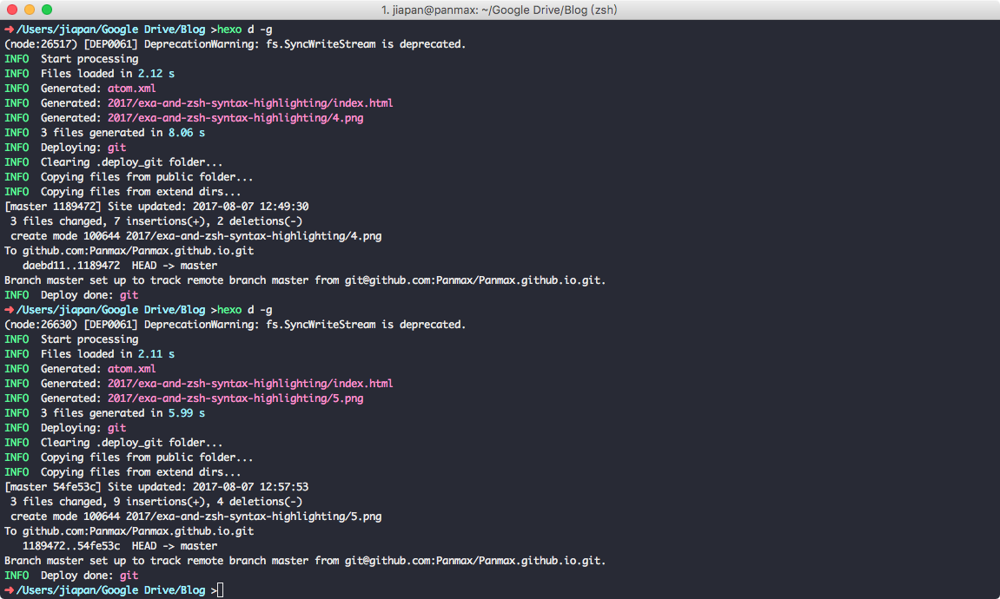

exa 和 zsh-syntax-highlighting
今天再来记录两个命令行神器。
第一个是 exa: https://the.exa.website/
官方的介绍为
exa is a modern replacement for ls.
顾名思义 exa 是一个用来替代 ls 的工具，官方介绍了很多关于 exa 的特性，对于我来说，使用它的原因是可以支持不同文件类型可以用不同颜色来展示这个特性。至于官方还提到，exa 比 ls 要更快一些，这我倒是没有什么感觉。
在 Mac 下直接用 Homebrew 安装就行了: brew install exa，为了方便使用，我直接修改 alias 为 ls，这样之后再使用 ls 命令时，系统就自动用 exa 来代替了，毫无学习成本。

来看下效果:

我这个目录下不同类型的文件不多，没有展示出特别好的效果
第二个神器是 zsh-syntax-highlighting，看名字就知道，它是一个在 zsh 下使用的工具，官方介绍为：
Fish shell-like like syntax highlighting for Zsh.
zsh-syntax-highlighting 是用来在命令行中提供语法高亮的工具 (很抱歉我没有用过 Fish)。
效果图：

安装方法：
brew install zsh-syntax-highlighting
然后将
source /usr/local/share/zsh-syntax-highlighting/zsh-syntax-highlighting.zsh
加入到 .zshrc 文件中即可。
最后再来说下我现在用的 iTerm2 配色，之前一直用的都是自己配的，会遇到文字和背景色不太搭的情况，比如 Date 和 Modified 那两列：

所以最近换用了： https://github.com/dracula/iterm 这个配色方案。看起来挺舒服的，所以就不再自己折腾了。
